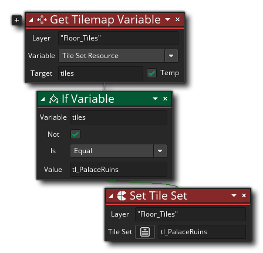

Beschreibung
Mit dieser Aktion können Sie eine beliebige Anzahl von Variablen für das Element kachelmap auf einer Ebene abrufen. Wenn Sie im Raumeditor eine Kachelebene erstellen, enthält diese Ebene ein Kachelelement, das dann mit Kacheln aus einem Kachelset gefüllt wird. Dieses Tilemap-Element enthält bestimmte Werte wie eine Offset-Position, das verwendete Tileset, die Breite, die Höhe usw. Die vollständige Liste der Werte, die Sie erhalten können, lautet:
- X-Koordinate - Die Position entlang der x-Achse auf der Ebene, auf der das Element kachelmap platziert wurde.
- Y-Koordinate - Die Position entlang der Y-Achse auf der Ebene, auf der das Element kachelmap platziert wurde.
- Spalten - Die Breite (definiert als die Anzahl der Spalten von Kachelzellen) des Tilemap-Elements.
- Zeilen - Die Höhe (definiert als Anzahl der Zeilen von Kachelzellen) des Kachelelements.
- Kachelbreite - Die Breite einer einzelnen Kachelzelle.
- Kachelhöhe - Die Höhe einer einzelnen Kachelzelle.
- Tile Set Resource - Die Tileset-Ressource, die dem Tilemap-Element zum Zeichnen zugewiesen wurde.
- Aktueller Frame - Der aktuelle Frame, der für animierte Kacheln gezeichnet wird.
- Maske - Die Maskendaten für das Element kachelmap.
- Globale Maske - Die globalen Maskendaten für alle Elemente der Kachelkarte.
Bei Verwendung dieser Aktion geben Sie den Layernamen (eine Zeichenfolge, wie im Raum-Editor definiert) an, um die Daten des Tilemap-Elements abzurufen, und dann den Typ der Daten, die Sie abrufen möchten (wie in der obigen Liste gezeigt). Der zurückgegebene Wert wird dann in der Zielvariablen gespeichert, die zuvor erstellt wurde oder eine neue temporäre Variable sein kann (wenn Sie das Kontrollkästchen "Temp" aktivieren). Beachten Sie, dass Sie zusätzliche Werte abrufen können, indem Sie auf das Pluszeichen klicken
neben der Aktion, und wählen Sie eine andere Variable und geben Sie eine andere Variable, um den zurückgegebenen Wert zu speichern.
Aktionssyntax:

Argumente:
Streit Beschreibung Layer Die Ebene, von der Daten abgerufen werden sollen Variable Die Variable zum Abrufen des Werts von (wie oben aufgeführt)
Beispiel:
Der obige Aktionsblockcode prüft, ob die Kacheln auf dem Layer "Floor_Tiles" den Tileset "tl_Palace" verwenden, und wenn dies nicht der Fall ist, sind sie so eingestellt, dass sie ihn verwenden.